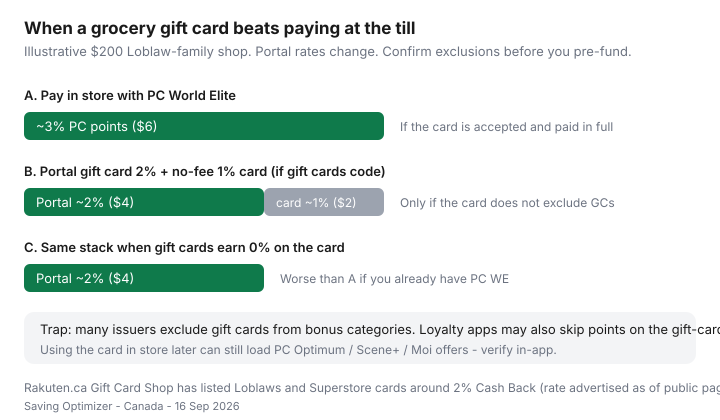

Food & Groceries · Canada
How to buy Canadian grocery gift cards with cashback without breaking loyalty rules
Stacking a cashback portal, a credit card, and PC Optimum sounds like free groceries until an exclusion wipes the bonus category, the loyalty app skips the gift-card SKU, and you have $400 of Superstore plastic sitting in a drawer. Canadian grocery gift cards can still be a clean 1–2% when the rules line up. They are a paperwork hobby when they do not.
This is the Canadian version: Rakuten.ca’s Gift Card Shop and similar portals, Loblaw and Sobeys card nuances, how cards treat gift-card MCCs, loyalty exclusions to check in-app, float and expiry, and when paying with the grocery card at the till is still simpler. Pay in full. Interest is not a stack.
Disclosure: Cashback portals (including Rakuten.ca), grocery gift cards, and credit cards are offer types. Saving Optimizer may earn a commission if we later add partner links. We do not currently claim portal, grocer, or issuer partnerships. Rates on gift-card shops change without notice — screenshot the offer before you buy.
Key takeaways
- Portals can pay Cash Back on the purchase of select grocery gift cards (Rakuten.ca has listed Loblaws and Superstore cards around 2% on public pages reviewed 16 Sep 2026).
- Many credit cards exclude gift cards from grocery bonus categories. Assume 0% extra until a statement proves otherwise.
- Buying the card and spending the card are different events for PC Optimum, Scene+, and Moi.
- Prefund a week or two, not a quarter, unless you like holding a grocer’s IOU.
- Skip grey-market “40% off Superstore” listings. Official channels only.
Where Canadians buy grocery gift cards with portal cashback
The usual legal stack is: cashback portal Gift Card Shop → pay with a card that does not hate gift cards → spend the grocery card at the banner you already shop.
Rakuten.ca’s Gift Card Shop help pages say you earn Cash Back on the full card value, typically credited within seven days, with free shipping on physical cards and e-gift options on some merchants. Public product pages for Loblaws and Real Canadian Superstore have advertised rates around 2% Cash Back (copy reviewed 16 Sep 2026; the page itself notes rates moving from 1% to 2% — treat this as perishable). Shoppers Drug Mart and Esso cards show up in the same shop; those are pharmacy and gas tools, not a No Frills till.
Other Canadian portals and bank “offers” sometimes list grocery cards. The rule is the same: screenshot rate, merchant, and exclusions. Scene+ has its own shopping portal for some members — that is a different currency. Do not double-count Rakuten Cash Back and Scene+ on the same click unless the program says you can.

Loblaws / Superstore / Sobeys card nuances
Loblaw-family gift cards (Loblaws, Superstore, and sometimes sister banners — read the back of the card) generally spend inside that family, not at Sobeys. Empire cards spend at Sobeys, FreshCo, Foodland, IGA, Safeway, Thrifty Foods as printed. Metro cards are Metro-family. Buying the wrong plastic is how people “save 2%” and then stand confused at No Frills.
PC Express and Voilà orders may or may not take gift cards depending on current checkout rules. Test a small e-gift before you fund a $250 delivery. Gift-card purchases themselves are classic exclusions for loyalty earn and for student discounts.
Credit card category treatment of gift cards
Issuers routinely exclude gift cards, prepaid, money orders, and cash-like MCCs from grocery, 5×, and even base earn in ugly cases. The banner card guide already flags this. Practical test:
- Buy a $25 grocery gift card through the portal.
- Check the statement coding and whether bonus points posted.
- If it coded as grocery, you got lucky — still read the current exclusions PDF, because luck expires.
- If it coded as 0× or “cash advance energy,” stop. Use the card at the grocery till instead.
A no-fee 1% everything card can still make a 2% portal stack into ~3% if gift cards earn base. A PC World Elite that refuses gift cards should just be used at No Frills.
Loyalty earn exclusions to verify in-app
Three different moments:
- Buying the gift card (online portal or in-store customer service): PC Optimum, Scene+, and Moi often pay nothing. Metro student 10% excludes gift cards. Food Basics student Tuesday excludes gift cards.
- Paying for groceries with the gift card: scan PC / Scene+ / Moi as usual. Weekly product offers usually still work. Confirm if a “pay with gift card” checkout suppresses points — rare but worth one test receipt.
- Redeeming points while using a gift card: possible at many tills; the cashier may need the loyalty scan first. Ask once, write it down.
Empire’s FreshCo Scene+ fine print lists gift cards among earn exclusions for weekly offers. Load offers anyway; do not expect points on the plastic purchase.
Float and expiry risk management
Rakuten’s Gift Card Shop FAQ states their cards have no fees and no expiration. Retailer cards from official Canadian grocers are usually the same, but balances are still an interest-free loan you made to a chain. Prefund one or two weekly shops, not six months of fear.
Keep the receipt or e-mail. Photograph the card number and PIN in a password manager if you must, not in your camera roll titled “GROCERY.” If a store closes or a banner rebrands, official customer service is your path — not a Facebook group.
Float test: if losing $150 would ruin the month, you do not have a gift-card strategy. You have a cash-flow problem. Use debit and the weekly system instead.
When gift cards beat paying with a rewards card directly
| Your current grocery earn | Portal gift card likely |
|---|---|
| PC World Elite ~3% at Loblaw, paid in full | Usually skip unless the portal is running a much higher promo and the card still earns on GCs |
| No-fee 1% card, Loblaw shopper | Portal ~2% can win if the funding card pays base earn |
| Gold Amex ~6% at Empire, under cap, fee already justified | Pay at the till. Do not convert 6% into a 2% gift card |
| Debit-only on purpose | Portal card bought with debit is still a 2%-ish discount if you trust the float |
| You carry a balance | Neither. Interest eats both stacks. See pay-in-full rules |
Safety: avoid shady grey-market cards
Cards sold at deep discounts on classifieds, “reward” Telegram channels, or random marketplaces are a stolen-number and phishing pattern. You can lose the money twice: once to the seller, again when the grocer zeros the balance. Official grocer sites, checkout at a store you trust, and established portals with a Canadian support path are the list.
Put a surviving stack into maximum rewards without debt. If this already feels like a second job, pay with the matching grocery card and load loyalty on Sunday. That is enough.
Sources & date stamps
- Rakuten.ca Gift Card Shop help, exclusions, and merchant pages for Loblaws / Real Canadian Superstore (rates and 7-day credit language reviewed 16 Sep 2026).
- FreshCo Scene+ public terms: gift cards among weekly-offer exclusions.
- Issuer grocery-card roundups and our grocery card guide: gift cards as a common bonus-category exclusion.
- Food Basics / Metro student-discount terms: gift cards excluded from 10% offers.
Frequently asked questions
Do grocery gift cards earn credit-card bonus points?
Often no. Many issuers exclude gift cards, prepaid loads, and money orders from grocery or bonus categories. Test a small card and read the statement before you pre-fund a month of groceries.
Can I still earn PC Optimum or Scene+ when I pay with a gift card?
Usually you can still scan the loyalty card and load offers on the grocery purchase itself. The *purchase of the gift card* is the exclusion trap. Confirm in the current app terms.
Is Rakuten.ca grocery gift card cashback worth it?
When the Gift Card Shop rate (public pages have shown about 2% on some Loblaw-family cards) beats what you would earn paying in store, and the funding card still pays something, it can be. If you already earn ~3% PC points in store, a 2% portal plus a 0% gift-card category is a downgrade.
Do grocery gift cards expire in Canada?
Most retailer grocery cards from official channels have no expiry, but hold a modest float and keep receipts. Unused balances are still your cash sitting at a grocer.
Are discounted grey-market grocery cards safe?
Treat unknown marketplaces as a scam-and-stolen-card risk. Buy from the grocer, the official gift-card shop, or a portal you can hold accountable. If the discount looks impossible, it is.